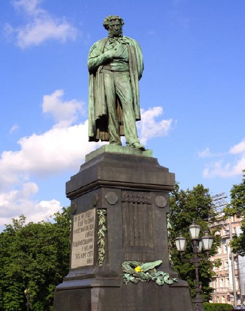

Великий поэт, драматург и прозаик Александр Сергеевич Пушкин, можно сказать, создал наш современный русский язык. Если бы не он, возможно, мы бы говорили сейчас как-то иначе. Не верите? Посмотрите ради интереса работы его предшественников или современников. Заметите, что так ясно, как великий поэт, никто тогда не писал. Именно поэтому память Пушкина особенно чтят в странах с русскоговорящим населением, а чтобы подрастающие поколения сразу после окончания школы не забывали о поэте, а взрослые могли вспомнить о великих произведениях автора, придумали праздник, который в этом году также будет отмечаться в России. Почему этот праздник так важен? Потому что это фундамент нашей культуры и истории. Знание творчества Пушкина — то, что помогает нас идентифицировать как представителей русской культуры. Читайте также краткая биография Пушкина А.С.
Отзывы:- Всегда интересно узнать что-то новое о великом человеке
- Русская культура немыслима без Пушкина А.С.
- Писателей много, но Пушкин - один